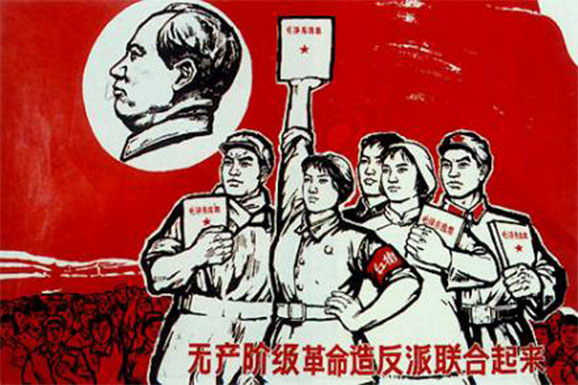

<!DOCTYPE html>
<html>
    
    <head>
    <link rel="stylesheet" href="boilerplate.css" />
	<link rel="stylesheet" href="styles.css" />
	<meta charset="utf-8">
    <meta name="viewport" content="initial-scale = 1.0,maximum-scale = 1.0" />
    <link href='http://fonts.googleapis.com/css?family=Oswald:400,300,700' rel='stylesheet' type='text/css'>
    
    </head>
    <body id = "one">

         <div id="hidNav">
            <ul class = "links">
                <li><a href="about.html" > ABOUT</a> </li>
                <li><a href="contact.html" > CONTACT</a> </li>
                <li><a href="sources.html" > SOURCES</a> </li>
            </ul>

            <ul class = "thumbnails">
        
                <li><a style="background-image: url(images/navImage1.jpg)" href="intro.html" > INTRODUCTION</a> </li>
                <li><a style="background-image: url(images/navImage2.jpg)" href="ch1.html" > CONSCIOUSNESS RAISING</a> </li>
                <li><a style="background-image: url(images/navImage3.jpg)" href="ch2.html" > IRON GIRLS</a> </li>
                <li><a style="background-image: url(images/navImage4.jpg)" href="ch3.html" > CHALLENGING FEMININITY</a> </li>
                <li><a style="background-image: url(images/navImage5.jpg)" href="ch4.html" > THE TURNING <br />POINT</a> </li>

            </ul>
        </div>

        <div id="openNav"></div>​
        

        <div id="ch1p1" class="ch1p1 clearfix">
        </div>
        
        <div id="ch1p2" class="ch1p2 clearfix">
            <p id="ch1p2secondary">
            WHILE CHINA PLAYED AN INFLUENTIAL ROLE IN FEMINIST AND CIVIL RIGHTS SOCIAL MOVEMENTS IN NORTH AMERICA, IT DID NOT DO SO BY USING MUCH MATERIAL AID LIKE FUNDING OR GUNS.  INSTEAD CHINA REACHED OUT WITH IMAGES, TEXT, AND SPEECH.<br />
            </p>
        </div>

        


        <div id="ch1p4" class="ch1p4 clearfix">
            <p id="ch1p4copy">
            In North America feminist practices such as consciousness–raising sessions drew directly on Chinese models of politicization, borrowed from widely popular books like <span class="italic">Fanshen</span> by William Hinton.<br /><br />According to Hinton, <span class="italic">fanshen</span> means: “’to turn the body’ or ‘to turn over.’  To China’s hundreds of millions of landless and land–poor peasants it meant to stand up, to throw off the landlord yoke, to gain land, stock, implements, and houses. But it means much more than this. It meant to throw off superstition and study science, to abolish ‘world blindness’ and learn to read, to cease considering women as chattels and establish equality between the sexes, to do away with appointed village magistrates and replace them with elected councils. It meant to enter a new world.” <br />
            </p>
        </div>


        <div id="ch1p5" class="ch1p5 clearfix" >
           
                
                
                <div id="ch1p5caption" data-2550="position: absolute;" data-2558="position: fixed; top:520px; left: 0px;" data-3876="position: absolute;" data-3676="opacity:1"; data-3800="opacity:0"; >
                    <p>
                        <span id="textspan">Redstockings meeting for a “consciousness raising” session. ”Women aren’t in a position to make demands now,” one says. “We have to build a movement first.”<br />- <span class="italic">Life</span>, 1969</span><br />
                    </p>
                </div>
                
            
            <div class = "ch1p5content">
                <p id="ch1p5copy1">
                From this book and others, feminists in North America learned that in China many people were encouraged to “speak bitterness” (<span class="italic">su ku</span>), to speak of their suffering and hardship in public forums. North Americans also borrowed this technique of collective discussion to share stories of their oppression as individuals and as women, to understand the social nature of their experience. Like the many study groups in China, North American feminists organized their own groups to study and discuss readings. Slogans like “the personal is political,” which changed the way that people understood, experienced, and engaged with what would count as “political” were inspired by readings from China.<br /><br />Juliet Mitchell has made a strong case for the Chinese practice of "speaking bitterness" as a Chinese political tool for articulating oppression being a model for a staple of feminist consciousness raising. <br /><br />Her position is worth quoting in full:<br />“In fact, the concept of ‘consciousness raising’ is the reinterpretation of a Chinese revolutionary practice of ‘speaking bitterness’ — a reinterpretation made by middle-class women in place of Chinese peasants and in a country riddled by psychotherapeutic practices. These peasants, subdued by violent coercion and abject poverty, took a step out of thinking their fate was natural by articulating it. <br />
                </p>
                
                <p id="ch1p5copy2">
                <span id="textspan1">The first symptom of oppression is the repression of words; the state of suffering is so total and so assumed that it is not known to be there. ‘Speaking bitterness’ is the bringing to consciousness of the virtually unconscious oppression; one person’s realization of an injustice brings to mind other injustices for the whole group. Nobody suggests that this revolutionary practice could be imported wholesale from the conditions of peasants in pre–revolutionary China to Women’s Liberation Movements in the advanced capitalist countries. But there is a relevance which doesn’t insult the plight of the Chinese peasant. In having been given for so long their own sphere, their ‘other’ world, women’s oppression is hidden far from consciousness (this dilemma is expressed as ‘women don’t want liberating’); it is this acceptance of a situation as ‘natural’, or a misery as ‘personal’ that has first to be overcome. ‘Consciousness raising’ is speaking the unspoken: the opposite, in fact, of nattering together.”</span><br />
                </p>
                <p id="ch1p5pullout">
                <span id="textspan2">Thus China served as a model of general revolutionary practice which could then be adapted for use in a women’s revolution. </span> <br />
                </p>
            </div>
        </div>

        <div id="ch1p6" class="ch1p6 clearfix">
            
            <p id="ch1p6copy">
                <span id="textspan">On Thanksgiving 1968, Kathie Sarachild presented "A Program for Feminist Consciousness Raising,” at the First National Women's Liberation Conference near Chicago, Illinois, in which she explained the principles behind consciousness raising and outlined a program for the process that the New York groups had developed over the past year. Groups founded by former members of New York Radical Women — in particular Redstockings and New York Radical Feminists — promoted consciousness raising and distributed mimeographed sheets of suggesed topics for consciousness raising group meetings. New York Radical Feminists organized neighborhood-based consciousness raising groups in Manhattan, Brooklyn, and Queens, involving as many as four hundred women at its peak.<br /><br />Over the next few years, small-group consciousness raising spread rapidly in cities and suburbs throughout the United States. By 1971, the Chicago Women's Liberation Union, which had already organized several  groups in Chicago, described small consciousness raising groups as “the backbone of the Women's Liberation Movement.”</span><br />
            </p>
        </div>

        <div id="ch1p7" class="ch1p7 clearfix">
            <p id="text">
            <span id="textspan">“William Hinton and the Women of Long Bow”</span><span id="textspan1"> </span><span id="textspan2"><br /></span> <span id="textspan3">A speech by Carol Hanisch, 1999</span><br />
            </p>
            <p id="text1">
            “I’m sure that when the peasant women of Long Bow held their “speak bitterness” meetings about their oppressors, they never dreamed that their method of struggle would help inspire women half way round the world to do the same.<br /><br />And when Bill Hinton wrote about those meetings in his chapter on “Half of China” in <span class="italic">Fanshen</span>, I bet he never dreamed his report would be one of the several sparks that would help light the prairie fire of women’s liberation in this country. But it did. We called that spark consciousness raising, adapted it to our own conditions, and it became the primary organizing tool of our movement, a radical weapon against male supremacy, as we put it.<br /><br />At our meetings in 1968 of New York Radical Women, the first women’s liberation group in New York City, we used to hang a poster on the wall, made up by Kathie Sarachild, who turned us on to <span class="italic">Fanshen</span> and who was spearheading  the development of feminist consciousness raising.<br /><br />It read:<br /><br />“Tell It Like It Is” <br />           —the Black Revolution<br /><br />“Speak Pains to Recall Pains” <br />           —the Chinese Revolution<br /><br />“Bitch, Sisters, Bitch”<br />            —the Final Revolution<br /><br />It was our way of acknowledging and uniting with those who taught and inspired us. It was also our response to those who called our meetings petty and unpolitical and group therapy.<br /><br />Like the peasants of Long Bow, we “spoke pains to recall pains” to examine our lives—to get at the truth of who was oppressing us and how — so we could better figure out what to do about it. We have had our share of revisionism in the Women’s Liberation Movement, and in certain circles what some women called consciousness raising was really psychological support and mutual aid and in those groups, it lost its political edge. But I can assure you that political consciousness raising is still being used today by radical feminists to study our current situation, to plan and critique actions, to train organizers, and to raise consciousness generally.”<br />
            </p>
            <p id="text2">
            <span id="textspan4">Carol Hanisch is a radical feminist and was an important member of New York Radical Women and Redstockings. She is best known for popularizing the phrase "The Personal Is Political" in a 1969 essay of the same name. </span><br />
            </p>
        </div>

        <div id = "ch1bottomnav">
            <a href="ch2.html" class="right"> <p class = "chapterRight"> CHAPTER 2: </p>  <p class = "titleRight"> IRON GIRLS </p> </a>
            <a href="intro.html" class="left"> <p class = "titleLeft"> INTRODUCTION </p> </a>
        </div>

       
   <script src="http://code.jquery.com/jquery-1.11.0.min.js"></script>
    <script type="text/javascript">

            $("#openNav").click(function() {
                var menu = $("#hidNav");
                if ($(menu).is(":visible")) {
                    $(menu).animate({height: 0}, 500, function() {$(menu).hide();});
                } else {
                    $(menu).show().animate({height: 170}, 500);           
                }
            });
    </script>

     <script type="text/javascript" src="js/skrollr.min.js"></script>
        <script type="text/javascript">
        var s = skrollr.init();
        skrollr.init({forceHeight: false});
     </script>


    </body>
</html>


